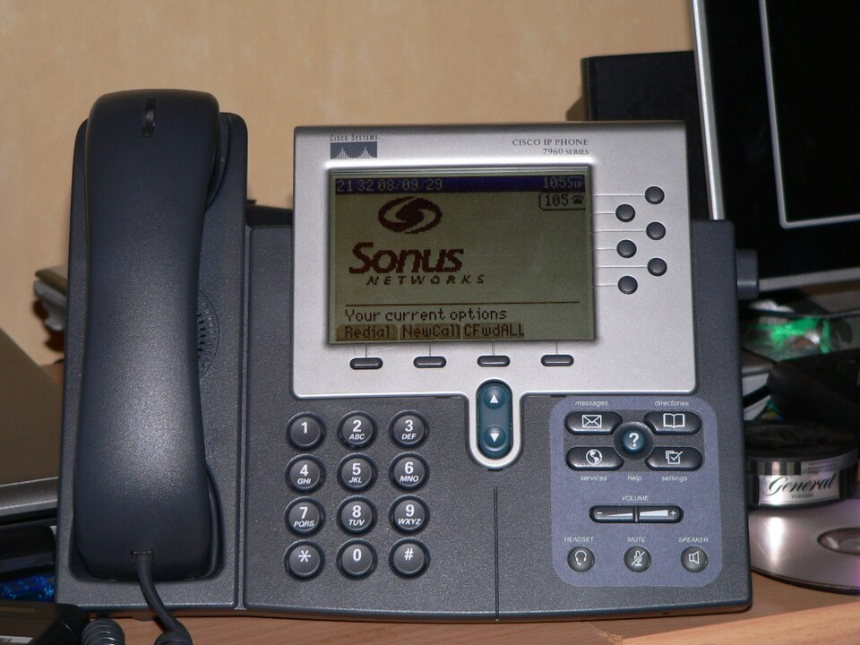
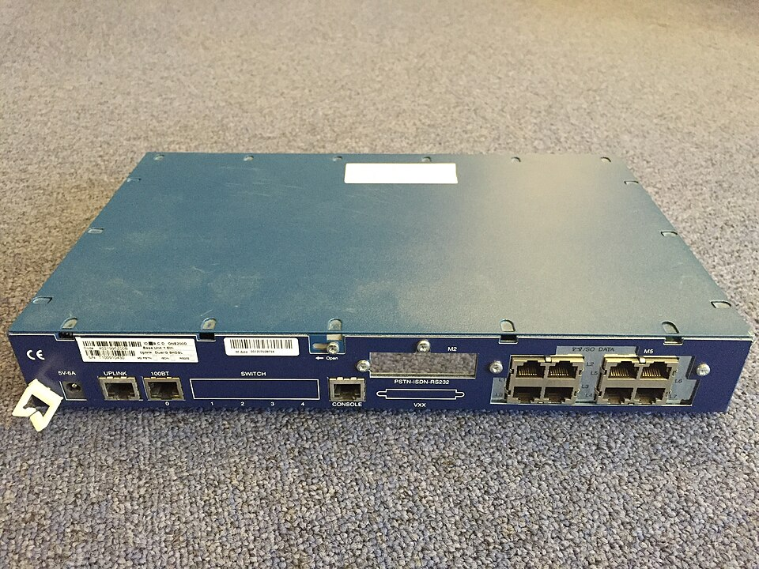

Diagnose one-way audio on an IP phone call
Compare the signalling and media paths. Turn “the call connects but I can’t hear them” into a precise support ticket.
Identify the phone and gateway
A desk IP phone can connect over Ethernet. A compatible power-over-Ethernet switch may also supply its power. An analogue handset can connect through a compatible analogue telephone adapter (ATA), while calls to outside lines may go through a voice provider's gateway. T44 explains how Session Initiation Protocol (SIP) sets up a call and the Real-time Transport Protocol (RTP) can carry its audio.

Photo by SimonInns, resized with callouts. Original photo · CC BY-SA 3.0.


Photo by hystiff, resized with callouts. Original photo · CC0.

Watch a packet analysis workshop. Find the SIP dialogue and then the two RTP directions in the example. SharkFest on YouTube.
Follow a working call
Use the example records below first. If you already have an isolated test PBX and two compatible softphones, create two private test extensions. Work on an owned LAN, without a public trunk or inbound Internet access. Place a call between the test extensions and confirm each party can hear a short spoken phrase. Capture only your own lab sessions, with permission from everyone involved.
- Check users A and B can register if the system uses registration. An authentication challenge during registration can be normal when successful authentication follows.
- Place the call. Follow the SIP dialogue for INVITE, any provisional responses, the final response, ACK and call hang-up with BYE. Note which endpoints or PBX legs the capture can see.
- Read the Session Description Protocol (SDP) in the signalling to identify where each party asks to receive audio. In Wireshark open Telephony → RTP → RTP Streams where applicable. An RTP stream may need identification from signalling. Record the expected and observed packet direction.
Follow the official Asterisk PJSIP examples if building the optional lab. Keep local credentials outside your evidence. The public exercise works without installing a PBX.
Compare the evidence
| Case | Observed in this capture | First discriminating check |
|---|---|---|
| Known good | Successful dialog. Audio packets reach both endpoints. Each person confirms intelligible audio. | Save signalling plus a baseline stream summary. |
| A hears B. B cannot hear A. | Call is answered. Both use the PBX as their media endpoint. On B, the expected incoming audio stream is absent. B's outgoing stream reaches the PBX. | Check whether A's media reaches the PBX and whether the PBX sends it towards B. Compare the addresses and ports read from SDP on both legs. |
| Packets arrive at B but B hears silence. | RTP sequence advances on the receiving interface. The session has audio packets in both directions. | Check softphone sound output, mute on A, codec and endpoint stats. Packet arrival can coexist with a silent or undecodable payload. |
| No call rings | No successful INVITE completion. | Investigate reachability, registration, routing and SIP response codes before the media diagnosis. |
Capture location matters. A downstream capture cannot show a packet discarded upstream. Media can be encrypted, relayed or split across two call legs. Escalate with the evidence your vantage point supports.
Draw two arrows for expected audio and mark where each was seen. Include which party heard whom, capture location, call and media timestamps and the request for the next team. Use synthetic extensions and redact identifiers.
Continue with network incident handover and the business connectivity and voice route.